<title>Recruit staging review 05/11</title>
<meta name="claude:viewport-fit-sides" content="cover">
<link rel="stylesheet" href="https://fonts.googleapis.com/css2?family=Inter:wght@400;500&family=IBM+Plex+Mono:wght@400&display=swap">
<style>
/* Layout: one column of before/after pairs, each pair side by side on wide screens, stacked on phones. */
:root {
  --bg: #f9f7f4; --surface: #ffffff; --fg: #23201c; --muted: #6b645b; --line: #e6e0d8;
  --accent: #c44f06; --before: #9a3412; --after: #166534; --chip: #f1ece5;
  --sans: "Inter", system-ui, -apple-system, "Segoe UI", sans-serif;
  --mono: "IBM Plex Mono", ui-monospace, Menlo, monospace;
}
@media (prefers-color-scheme: dark) { :root:not([data-theme="light"]) {
  --bg: #171513; --surface: #201d1a; --fg: #ece7e1; --muted: #a39b91; --line: #34302b;
  --accent: #f08a4b; --before: #f19a7a; --after: #7fd19b; --chip: #2a2622; color-scheme: dark } }
:root[data-theme="dark"] {
  --bg: #171513; --surface: #201d1a; --fg: #ece7e1; --muted: #a39b91; --line: #34302b;
  --accent: #f08a4b; --before: #f19a7a; --after: #7fd19b; --chip: #2a2622; color-scheme: dark }
body { background: var(--bg); color: var(--fg); font-family: var(--sans); font-size: 15px; line-height: 1.55;
  padding-left: max(16px, env(safe-area-inset-left, 0px)); padding-right: max(16px, env(safe-area-inset-right, 0px)); }
main { max-width: 1180px; margin: 0 auto; padding-block: 32px 64px; display: grid; gap: 48px; }
header { display: grid; gap: 8px; }
h1 { font-weight: 500; font-size: 26px; margin: 0; text-wrap: balance; }
h2 { font-weight: 500; font-size: 20px; margin: 0; text-wrap: balance; }
h3 { font-weight: 500; font-size: 15px; margin: 0; }
p { margin: 0; max-width: 68ch; }
.meta { color: var(--muted); font-size: 13px; }
.mono { font-family: var(--mono); font-size: 12.5px; }
section { display: grid; gap: 16px; padding-top: 24px; border-top: 1px solid var(--line); }
.status { display: inline-flex; gap: 8px; flex-wrap: wrap; }
.chip { background: var(--chip); border-radius: 4px; padding: 2px 8px; font-size: 12.5px; }
.chip.ok { color: var(--after); }
.pair { display: grid; grid-template-columns: 1fr 1fr; gap: 16px; }
.pair.phone { grid-template-columns: repeat(2, minmax(0, 320px)); }
figure { margin: 0; display: grid; gap: 8px; min-width: 0; }
figure img { width: 100%; border: 1px solid var(--line); border-radius: 4px; background: var(--surface); }
figcaption { font-size: 13px; color: var(--muted); }
.tag { font-size: 11px; letter-spacing: .06em; text-transform: uppercase; font-weight: 500; }
.tag.b { color: var(--before); } .tag.a { color: var(--after); }
ul { margin: 0; padding-left: 20px; display: grid; gap: 4px; max-width: 72ch; }
.ask { background: var(--surface); border: 1px solid var(--line); border-radius: 6px; padding: 16px; display: grid; gap: 8px; }
@media (max-width: 720px) { .pair, .pair.phone { grid-template-columns: 1fr; } }
</style>
<main>
  <header>
    <h1>Recruit staging review 05/11</h1>
    <p class="meta">Hai thay đổi giao diện đã lên STAGING (recruit.viet18.com), prod chưa. Ảnh "trước" chụp lúc 18:00 trên FE 5619e873, ảnh "sau" trên FE 3e405a8a.</p>
  </header>

  <section>
    <h2>1. Nút góp ý (feedback) dùng được trong mọi popup</h2>
    <div class="status"><span class="chip">recruit-fe #690</span><span class="chip ok">STAGING</span><span class="chip">bead 7z536</span></div>
    <p>CEO muốn có nút góp ý ở mọi trang và mọi popup. Trước đây popup che nút: nút mờ, bấm vào thì đóng luôn popup. Giờ nút nằm trên popup, tự nâng lên khi có popup để không che nút ở chân popup; bấm Escape trong form góp ý chỉ đóng form, popup phía sau vẫn mở.</p>

    <h3>Xem nhanh Loan Officer, máy tính (1440)</h3>
    <div class="pair">
      <figure><span class="tag b">Trước</span>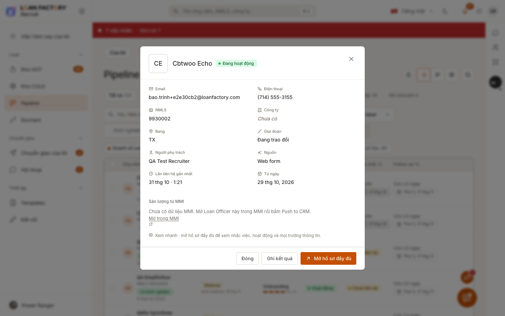<figcaption>Nút góp ý bị lớp tối của popup che.</figcaption></figure>
      <figure><span class="tag a">Sau</span>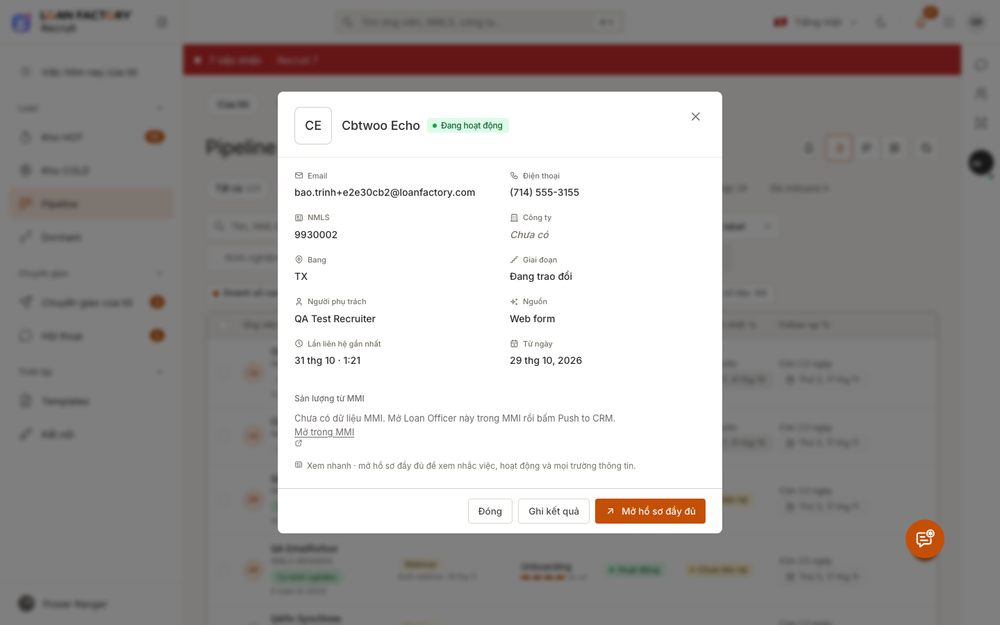<figcaption>Nút nằm trên popup, nâng lên khỏi chân popup.</figcaption></figure>
    </div>
    <h3>Bấm vào nút góp ý</h3>
    <div class="pair">
      <figure><span class="tag b">Trước</span>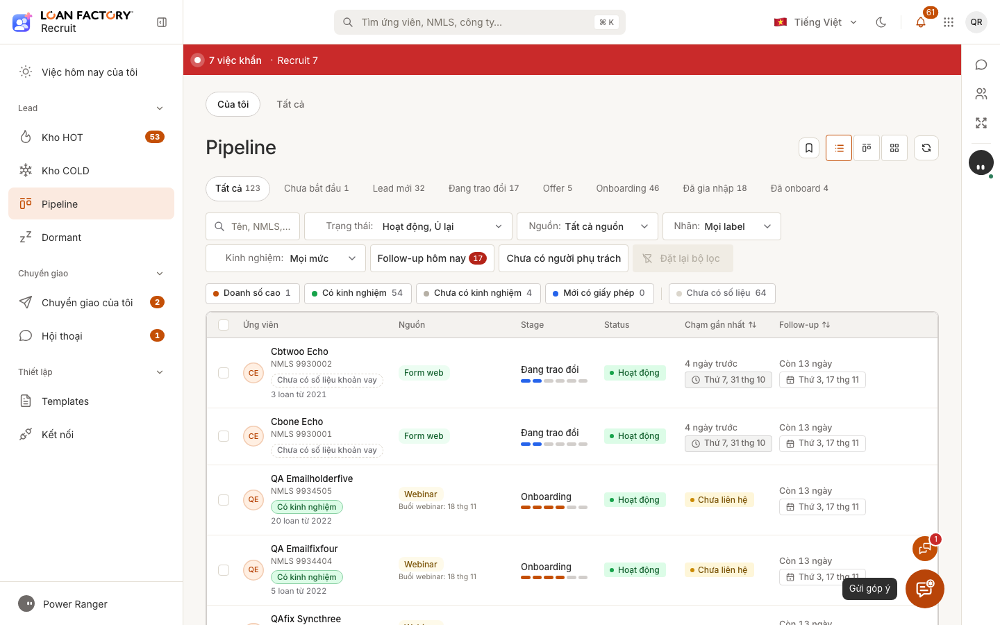<figcaption>Bấm vào thì popup đóng, form góp ý không mở.</figcaption></figure>
      <figure><span class="tag a">Sau</span>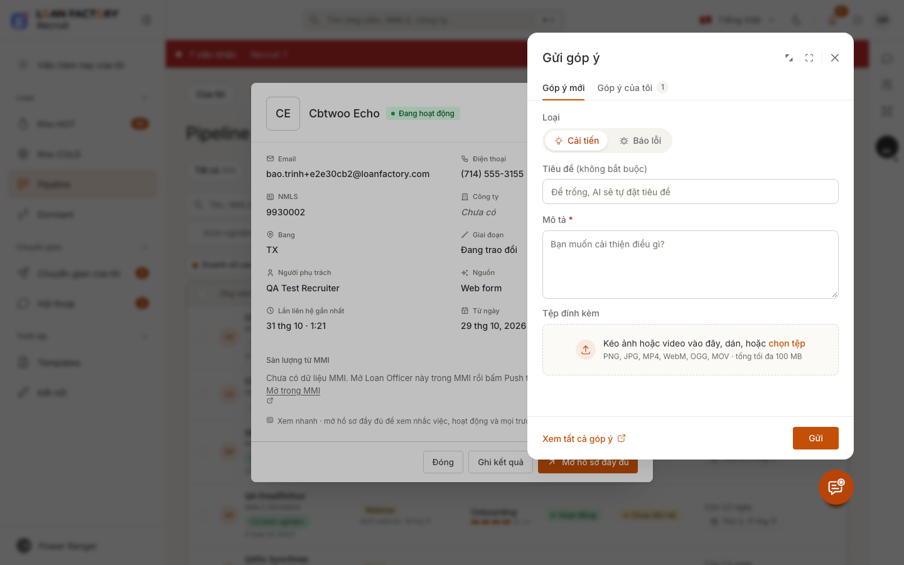<figcaption>Form "Gửi góp ý" mở, popup vẫn còn phía sau.</figcaption></figure>
    </div>
    <h3>Điện thoại (375)</h3>
    <div class="pair phone">
      <figure><span class="tag b">Trước</span>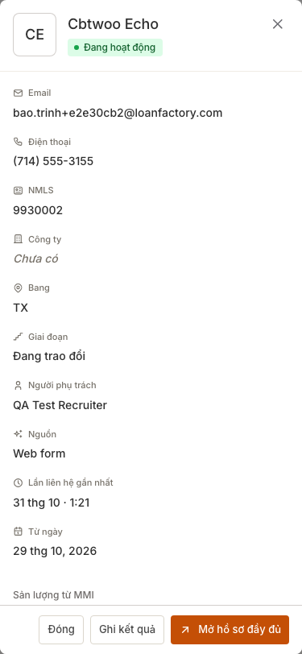<figcaption>Popup che kín, không thấy nút.</figcaption></figure>
      <figure><span class="tag a">Sau</span>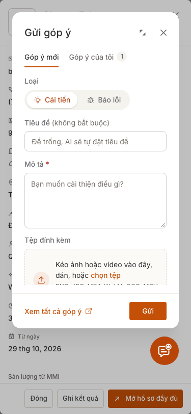<figcaption>Nút và form góp ý dùng được.</figcaption></figure>
    </div>
    <div class="pair phone">
      <figure><span class="tag a">Sau</span>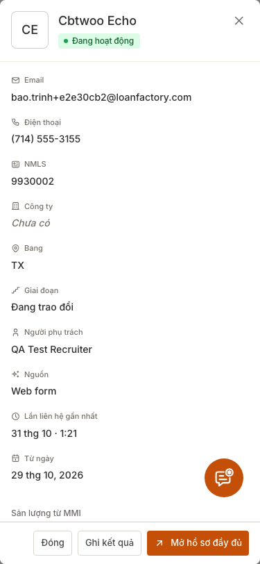<figcaption>Nút nâng lên, không che nút "Mở hồ sơ đầy đủ".</figcaption></figure>
      <figure><span class="tag a">Sau</span>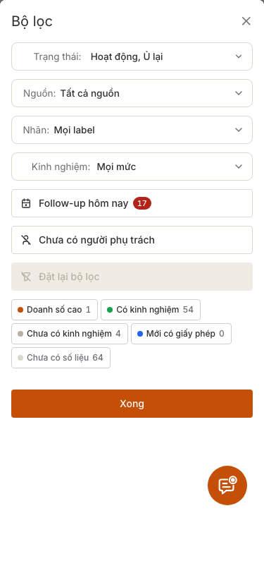<figcaption>Bộ lọc trên điện thoại: nút Xong không bị che.</figcaption></figure>
    </div>
    <ul>
      <li>Ô chọn (dropdown) mở trong popup vẫn nằm trên nút góp ý, không bị che.</li>
      <li>Chưa làm: trang /join của Loan Officer (repo khác) chưa có nút góp ý.</li>
    </ul>
  </section>

  <section>
    <h2>2. Công tắc "Tự giao lead HOT" trên Settings</h2>
    <div class="status"><span class="chip">recruit-fe #691</span><span class="chip ok">STAGING</span><span class="chip">bead 4r8je</span><span class="chip">cờ vẫn TẮT</span></div>
    <p>Trước đây muốn bật tự giao lead HOT phải gọi API admin. Giờ Admin bật/tắt và chỉnh 3 con số ngay trên Settings. Bật thì hỏi xác nhận trước và nói rõ con số; tắt thì không hỏi. Prod vẫn tắt như anh dặn.</p>
    <div class="pair">
      <figure><span class="tag b">Trước</span>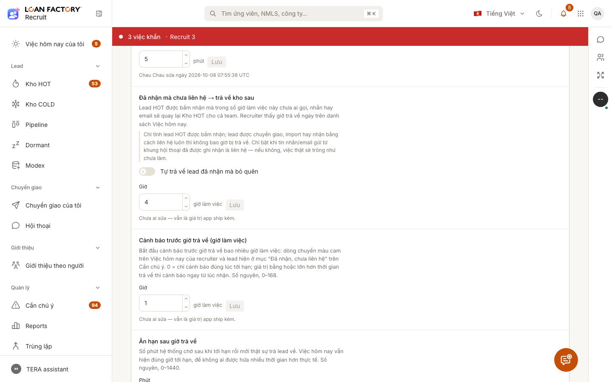<figcaption>Mục Kho HOT, chưa có khối tự giao.</figcaption></figure>
      <figure><span class="tag a">Sau</span>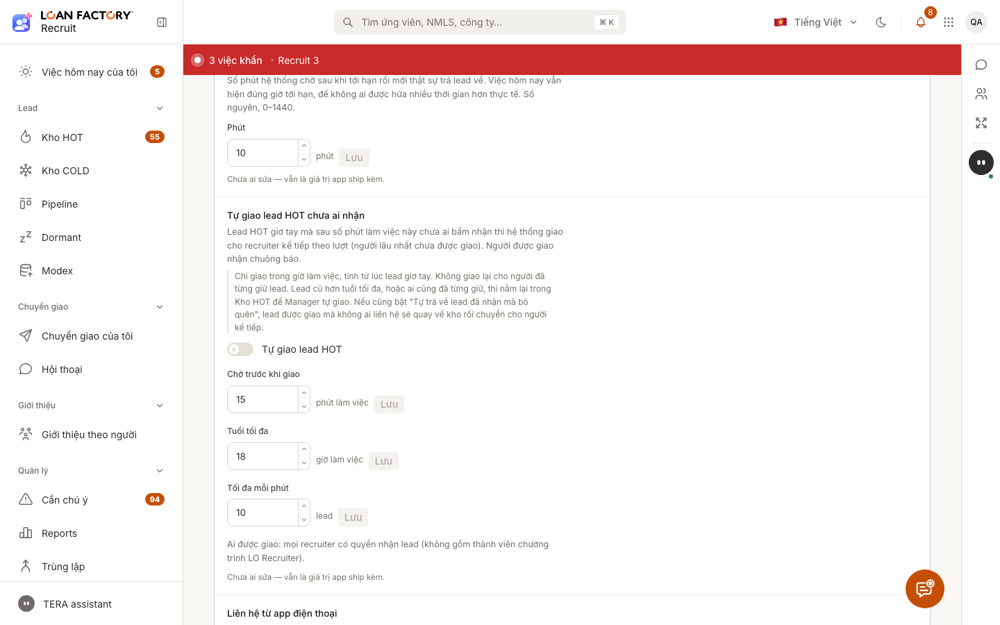<figcaption>Khối mới ngay sau "Ân hạn sau giờ trả về".</figcaption></figure>
    </div>
    <div class="pair">
      <figure><span class="tag a">Sau</span>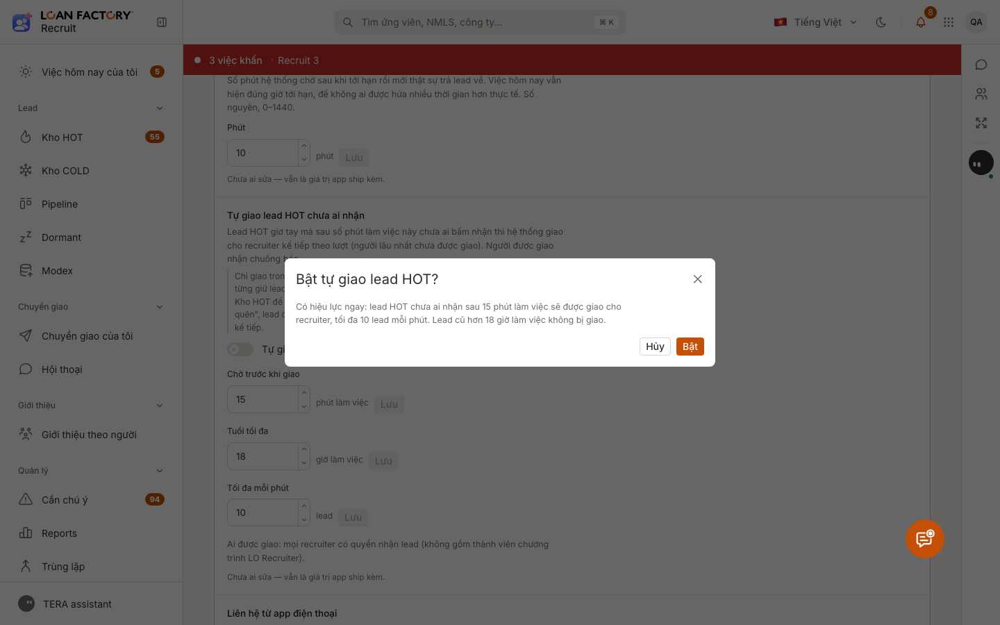<figcaption>Hộp xác nhận khi bật (đã bấm Hủy, cờ vẫn tắt).</figcaption></figure>
      <div class="pair phone" style="grid-template-columns:1fr 1fr">
        <figure><span class="tag b">Trước</span>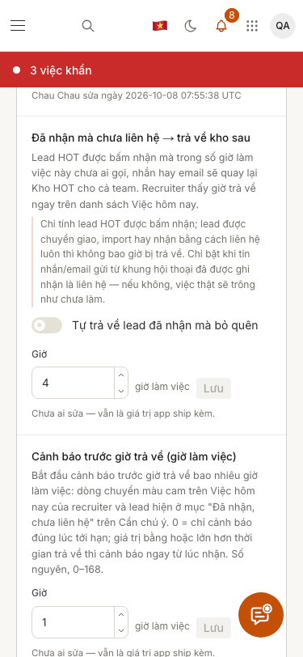<figcaption>Điện thoại, trước.</figcaption></figure>
        <figure><span class="tag a">Sau</span>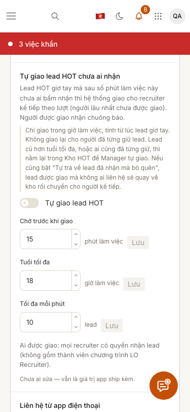<figcaption>Điện thoại, sau.</figcaption></figure>
      </div>
    </div>
  </section>

  <section>
    <h2>Anh cần làm</h2>
    <div class="ask">
      <p>Không cần quyết gì thêm cho 2 mục này. Anh xem ảnh, thấy chỗ nào chưa ổn thì nói, em sửa. Lên prod khi anh duyệt.</p>
      <p class="meta">Các việc khác của lô này (nhắc lại chuông Meet, nhắc invite bị kẹt, tự ghi "No answer") đang chạy, sẽ báo riêng.</p>
    </div>
  </section>
</main>
